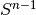

PyGeometry API¶
Design notes¶
- No fancy OO-overdose here. Geometric objects (rotation matrices, poses, etc.) are represented using vanilla Numpy array: there’s no class Rotation, Pose, etc. If you don’t think this is a good idea, your mind has been spoiled by C++ or Java classes taught by clueless professors.
- The main procedures are implemented as simple functions accepting and returning numpy arrays. Manifolds are implemented using classes that wrap the simple functions.
- Manifolds objects “know” how to compute distances, interpolate, etc. This makes sense: for example, the interpolation between the identity and a rotation matrix depends on whether you are considering them as elements of GL(n) or SO(n).
- Most functions declare contracts among parameters and return values using the PyContracts library. This is slightly paranoid. You can disable all those checks using
contracts.disable_all().
Namespace¶
Every symbol is imported in the geometry module.
However, in this API documentation, the full path to the module is shown. For example, rotation_from_axis_angle is defined in the module geometry.rotations, but you can import it as such:
from geometry import rotation_from_axis_angle
In fact, this will import all functions and classes:
from geometry import *
Naming conventions¶
The naming conventions for conversion operations is:
x = <X>_from_<Y>(y)
For example:
R = rotation_from_axis_angle(axis, angle)
axis, angle = axis_angle_from_rotation(R)
R = rotation_from_quaternion(q)
Manifolds interface¶
geometry.manifolds.base.DifferentiableManifold |
|
geometry.manifolds.base.Group |
|
geometry.manifolds.matrix_lie_group.MatrixLieAlgebra |
|
geometry.manifolds.matrix_lie_group.MatrixLieGroup(n, …) |
This is the base class for matrix Lie groups. |
Hyperspheres¶
Manifold class:
geometry.manifolds.sphere.Sphere(order) |
These are hyperspheres of unit radius. |
Instances of the manifold class:
-
geometry.manifolds.S1¶ S1: Unit circle (2D vectors of norm 1).
-
geometry.manifolds.S2¶ S2: Unit sphere (3D vectors of norm 1)
Contracts (PyContracts) and checks:
geometry.spheres.assert_orthogonal(s, v) |
Checks that two vectors are orthogonal. |
geometry.spheres.unit_length(x) |
Checks that the value is a 1D vector with unit length in the 2 norm. |
geometry.spheres.directions(X) |
Checks that every column has unit length. |
Random sampling:
geometry.spheres.random_direction([ndim]) |
Generates a random direction in . |
geometry.spheres.random_directions(N[, ndim]) |
Returns a set of random directions. |
geometry.spheres.any_distant_direction(s) |
Returns a direction distant from both s and -s. |
geometry.spheres.any_orthogonal_direction(s) |
Returns any axis orthogonal to s (not necessarily random). |
geometry.spheres.random_orthogonal_direction(s) |
Returns a random axis orthogonal to s (only implemented for circle and sphere). |
geometry.spheres.random_directions_bounded(…) |
Returns a random distribution of points in . |
Miscellaneous:
geometry.spheres.geodesic_distance_on_sphere(s1, s2) |
Returns the geodesic distance between two points on the sphere. |
geometry.spheres.distribution_radius(S) |
Returns the radius of the given directions distribution. |
geometry.spheres.distances_from(S, s) |
Returns the geodesic distances on the sphere from a set of points S to a given point s. |
geometry.spheres.sorted_directions(S[, …]) |
Rearranges the directions in S in a better order for visualization. |
SO(n) – rotations¶
Manifold classes:
geometry.manifolds.special_orthogonal.SO |
|
geometry.manifolds.special_orthogonal.so |
Instances:
-
geometry.manifolds.SO2¶ SO(2): 2x2 rotation matrices
-
geometry.manifolds.SO3¶ SO(3): 3x3 rotation matrices
-
geometry.manifolds.so2¶ Lie algebra for SO(2): 2x2 skew-symmetric matrices
-
geometry.manifolds.so3¶ Lie algebra for SO(3): 3x3 skew-symmetric matrices
Contracts and checks:
geometry.rotations.rotation_matrix |
|
geometry.rotations.skew_symmetric |
|
geometry.rotations.orthogonal |
Conversions functions:
geometry.rotations.hat_map(v) |
Maps a vector to a 3x3 skew symmetric matrix. |
geometry.rotations.map_hat(H) |
The inverse of hat_map(). |
geometry.rotations.rotation_from_quaternion(x) |
Converts a quaternion to a rotation matrix. |
geometry.rotations.rotation_from_axis_angle(…) |
Computes the rotation matrix from the (axis,angle) representation using Rodriguez’s formula. |
geometry.rotations.rotation_from_axis_angle2(…) |
Get the rotation from the (axis,angle) representation. |
geometry.rotations.axis_angle_from_quaternion(q) |
This is the inverse of quaternion_from_axis_angle(). |
geometry.rotations.axis_angle_from_rotation(R) |
Returns the (axis,angle) representation of a given rotation. |
geometry.rotations.quaternion_from_rotation(R) |
Converts a rotation matrix to a quaternion. |
geometry.rotations.quaternion_from_axis_angle(…) |
Computes a quaternion corresponding to the rotation of angle radians around the given axis. |
Random sampling:
geometry.rotations.random_quaternion() |
Generate a random quaternion. |
geometry.rotations.random_rotation([ndim]) |
Generate a random rotation matrix. |
geometry.rotations.random_orthogonal_transform() |
Random sampling:
geometry.rotations.geodesic_distance_for_rotations(R1, R2) |
Returns the geodesic distance between two rotation matrices. |
SE(n) – poses¶
Manifold classes:
geometry.manifolds.special_euclidean.SE |
|
geometry.manifolds.special_euclidean.se |
Instances:
-
geometry.manifolds.SE2¶ SE(2): 2D poses
-
geometry.manifolds.SE3¶ SE(3): 3D poses
-
geometry.manifolds.se2¶ Lie algebra for SE(2).
-
geometry.manifolds.se3¶ Lie algebra for SE(3).
Conversions:
geometry.poses.pose_from_rotation_translation(R, t) |
|
geometry.poses.rotation_translation_from_pose(pose) |
|
geometry.poses.SE2_from_translation_angle(t, …) |
Returns an element of SE2 from translation and rotation. |
geometry.poses.translation_angle_from_SE2(pose) |
|
geometry.poses.SE2_from_xytheta(xytheta) |
Returns an element of SE2 from translation and rotation. |
geometry.poses.se2_from_linear_angular(…) |
Returns an element of se2 from linear and angular velocity. |
geometry.poses.linear_angular_from_se2(vel) |
Misc:
geometry.poses.extract_pieces(x) |
|
geometry.poses.combine_pieces(a, b, c, d) |
Procrustes analysis¶
geometry.procrustes.best_orthogonal_transform(X, Y) |
Finds the best orthogonal transform R between X and Y, such that R X ~= Y. |
geometry.procrustes.closest_orthogonal_matrix(M) |
Finds the closest orthogonal matrix to M. |
Basic utils¶
geometry.basic_utils.assert_allclose |
|
geometry.basic_utils.normalize_length(s[, norm]) |
Normalize an array such that it has unit length in the given norm. |
geometry.basic_utils.normalize_length_or_zero(s) |
Normalize an array such that it has unit length in the given norm; if the norm is close to zero, the zero vector is returned. |
geometry.basic_utils.safe_arccos(x) |
Returns the arcosine of x, clipped between -1 and 1. |
geometry.basic_utils.finite(x) |
Other manifolds¶
geometry.manifolds.euclidean.Euclidean(dimension) |
This is the usual Euclidean space of finite dimension; this is mostly used for debugging. |
geometry.manifolds.torus.Torus(n) |
|
geometry.manifolds.moebius.Moebius |